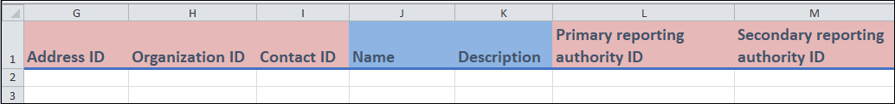
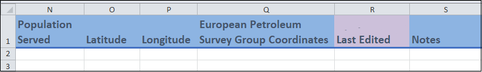

How to use the ODM
Dictionary v2.2.2 Documentation v2.1.0
How-To guides
1) How to use templates
ODM Excel report templates provide you with an easy way to enter your wastewater and other environmental data into the relevant PHES-ODM tables (more information about the tables can be found in the getting-to-know section). The templates also serve as an interactive way to get to know the ODM and can be found at the OSF.io PHES-ODM reference file folder.
The guides below will walk you through each of the report templates. In these guides, “field” refers to a column in the template, and “entry” refers to a row of information that you entered. The guides also provide definitions and explanations for some terms; more complete information can be found in the Reference Guide - Parts document. If you have any questions or comments, you can post them on our Discourse forum.
As a starting point:
Sample reportandMeasure reporttables are used for day-to-day reporting. You can record information about a sample in theSample reporttable. Measures (or measurements) are recorded in theMeasure reporttable. A measure is “measurement or observation of any substance including a biological, physical or chemical substance”.There are three optional tables that support the reporting of samples and measures:
Sample relationshipsis used only when you have samples that are pooled or split.Measure set reportcan be used to link measures together.Quality reportsis used for detailed quality assurance and control reporting (you can, and should, record a quality flag attribute for each measure or sample in theMeasure reportandSample reporttables).
Typically, there is a one time initial setup where you will need to enter information into the
Sites,Address,Organization, andContacttables.Sitesis mandatory and records information about where testing is performed.Address,Organization, andContactprovide the contact information for sites and entities such as laboratories.
There are optional supporting tables, such as
ProtocolsandInstrument, where you can use the templates to record information about how samples are taken and how measures are reported. You only need to compete these tables once and then update them as needed.
- `Protocol steps` and `Protocol relationships` tables are used alongside the `Protocols` table. 
- Other supporting tables include
Polygon, which stores information about the sample shed, andDataset, which stores information about the data custodian and owner of the data.
The templates contain four main types of fields; in these how-to guides they are colour-coded for instructional purposes:
Identifier and unique identifier (red): In these fields you will create a value that will be used to identify something. For instance,
Sample IDis used to identify each unique sample. An identifier can be repeated between entries, while an unique identifier cannot. There is usually only one unique identifier per template, and they correspond to the name of the template. For example,Measure IDfor theMeasure reporttemplate, andContact IDfor theContacttemplate.Drop-down and conditional drop-down menus (green): These fields have a drop-down menu which contain the values that you can either select or type in. In conditional drop-down menus, the values depend on what you entered in a previous field.
Date fields (purple): Dates are entered in these fields and must be in the form of the ISO 8601 format:
yyyy-mm-dd. All date fields also support entries for hours, minutes, and seconds:2022-01-01T06:11:54and2022-01-01T06:11:54+13:30Free form fields (blue): In these fields, you can enter your data in any format that you wish. Any restrictions will be specified in the relevant sections. Keep in mind, different measures may have different data types that cannot be validated in Excel. The data type of a measure can be checked in the reference list for the measure. For example, the data type for Sample temperature is a real number.
2) How to report Measures and Measure sets
In this guide you will learn how to record data in the Measure report (or measures Excel tab) and Measure set report (or measureSets tab) templates. In the Measure report template, each row represents a measure. Along the same lines, in the Measure set report template, each entry represents a collection or set of measures.
You can find additional information regarding terms and the colour-coding of columns at the beginning of this document (How-To guides) and the Reference Guide - Parts document.
Quick Start
Below you will find the mandatory fields for the Measure report and Measure set report templates. You will also find definitions of these fields and examples of entries of data. A more detailed description of some of the key concepts can be found in the following section, Detailed description.
Measure report template
- Mandatory fields
Report ID: Unique identifier for theMeasure reporttemplate. Each value represents a measure.Sample ID: Identifier for the sample that is associated with each measure.Site ID: Identifier for the location where a sample was taken.Analysis Date End: Date the measure was completed.Measure: A measurement or observation of any substance including a biological, physical or chemical substances.Value: Value of the measure.Unit: Units of a value.Aggregation: Statistical measure that the measure represents (for example “mean”).Specimen: Substance or thing upon which the observation was made. Specimens includePopulation,Sample, andSite. This field is only mandatory if there is more than one specimen type that is collected in the dataset.
Examples
Image will be added
Measure Sets Template
- Mandatory fields
Report set ID: Unique identifier for theMeasure set reporttemplate. Each value represents a group of related measures.
Examples
Image will be added.
Detailed description
Measures template
Columns A to H

Columns A-C, and E-H
These are identifier fields.
Report ID(column A) is the unique identifier for this template, and it cannot be repeated. You can think of eachReport IDas representing a unique measure. The field can be any combination of letters or words up to 30 characters.You can repeat the other fields between entries (if needed). For instance, if you enter two different measures from the same sample, then the
Sample ID(column C) will be the same.You may have already created these identifiers in another template. For instance, you may have created
Sample IDin theSample reporttemplate.
Column D
Purposehas a drop-down menu. If you are unsure what to put, selectRegular.
Columns I to M
- Columns I to K
- These are date fields where you can enter the dates associated with your measure in the format yyyy-mm-dd. Including hours and minutes is optional, but all date-entries use the ISO 8601 format.
2022-01-01T06:11:54or2022-01-01T06:11:54+13:30
- These are date fields where you can enter the dates associated with your measure in the format yyyy-mm-dd. Including hours and minutes is optional, but all date-entries use the ISO 8601 format.
- Columns L and M
SpecimenandFraction analyzedhave drop-down menus. In general both fields are optional, but both are recommended (see next point for the exception).Specimenis mandatory when the data you are entering has more than one type of specimen. When there is only one specimen, theDatasettable records the specimen type. For example, if yourMeasure reporttable includes only wastewater sample measures, you can indicate this information in theDatasettable.Fraction analyzedapplies only for water and wastewater samples. You should record the fraction for all samples if the compartment type is water or wastewater.
- Columns I to K
Columns N to S

- Columns N and O
GroupandClasshelp organize theMeasurefield by making specific measures easier to find (see the example in the next section). Both fields have a drop-down menu and are optional.Leave these fields blank if you do not use them.
- Column P
Measureis where you select what is being measured. A measure in ODM is a “measurement or observation of any substance including a biological, physical or chemical substance”.Measurehas a conditional drop-down menu. If you chose to enter in aClass(column O), the drop down menu will contain theMeasuresfound in thatClass. As mentioned, you can also enter a value intoGroupto help organize everything. If you did not enter a value in column O, the menu will contain all possible measures.For example, to find the allele measures for SARS-CoV-2 you can start by selecting
SARS-CoV-2in theGroupcolumn. Next, you selectAllelesin theClassfield. Then, in the drop-down menu of theMeasurefield, you will see all the possible measures that contain SARS-CoV-2 allele regions.
- Column Q
Valueis where you enter the value of your measure. For instance, if you recorded anEnvironmental temperatureof 20 oC, you would enter “20”.Note: While the value you enter into this field can be of any data type, each measure is associated with a specific one. Data types for each measure can be found in the reference documentation. For example, the data type for
Environmental temperaturecan be found here.
- Column R
Unitis where you enter the unit of your measure. This is a conditional drop-down menu field that lists all units that are valid for what was entered in theMeasurefield. For example, if selectedEnvironmental temperaturein theMeasurefield, the only unit displayed isCelsius.
- Column S
Aggregationsis where you enter the aggregation of your value using a drop-down menu. For instance, does your value represent a mean, median, etc.What appears in this menu list depends on what you entered in the
Unitfield (column R).
- Columns N and O
Columns T to AB
- Columns U, V, Z and AB
- These are free-form fields.
Index(column U) is used if you have multiple entries with the same values in most of the other fields; an example is when you make replicates of measures. If this is the case you can enter “1”, “2”, etc. in this field to differentiate them.Measure license(column V) refers to the access and use licensing of the measure that you are entering.
- Column T and W
- These are fields which contain drop-down menus.
Reportable(column W) is where you can indicate if the measure should not be used for regular reporting due to quality concerns. You can record more details of the quality concerns in theQuality reportstemplate.
- Column X and Y
- These are identifier fields that are used to indicate the organization and contact person associated with the entry.
- Column AA
Last editedis where you can indicate the date when the entry was last updated. This field is used when you modify an entry after your initial recording. Leave this field blank if the entry was entered with no updates.
- Columns U, V, Z and AB
Measure set report template
Columns A to G
Columns A, B, D and E
These are identifier fields.
Report Set ID(column A) is the unique identifier for this template, and cannot be repeated between entries. In essence, each value ofReport set IDrepresents a unique measure set. This field can be any combination of letters or words up to 30 characters.For the rest, you can repeat the identifier between entries (if needed). For instance, if you are entering two different measure sets that came from the same organization, then the
Organization ID(column D) will be the same.You may have already created these identifiers in another template. For instance you may have created
Organization IDin theOrganizationtemplate.
Columns C and G
- These are free form fields in which you can enter the indicated information.
Name(column C) refers to the name that you have given to the measure set.
Column F
Last editedis a date field in which you can enter the date when the entry was last updated. This field is used when you modify an entry after your initial recording. Leave this field blank if the entry was entered with no updates.
You have now entered your data in the Measure report and Measure set report templates, congratulations!
3) How to report samples and sample relationships:
In this guide you will learn how to enter information about samples and sample relationships into their respective templates. In the Sample report (or samples tab) template, each entry represents a sample. A sample is the wastewater that you collected so that measures can be made. Along the same lines, each entry in the Sample relationships (orsampleRelationships) template represents an interaction (or relationship) between two samples in the form “subject - relationship - object”. So, to specify that Sample A is a field sample replicate of Sample B, you would enter Sample ID of A - Field sample replicate - Sample ID of B.
You can find additional information regarding terms and the colour-coding of columns at the beginning of this document (How-To guides) and the Reference Guide - Parts document.
Quick Start
Below you will find the fields that are mandatory for the Sample report and Sample relationships templates. You will also find definitions of these fields and examples of entries of data. A more detailed description of some of the key concepts can be found in the following section, Detailed Description.
Samples Template
- Mandatory fields
Sample ID: Unique identifier for theSample reporttemplate. Each value represents a sample.Site ID: Identifier for the location where a sample was taken.Sample material: Type of material that the sample is made of.Sample collection type: Method used to collect the sample.Collection period: The time period over which the sample was collected, in hours.Collection number: The number of subsamples that were combined to create the sample. Use NA for continuous, proportional or passive sampling.Collection date time: The date, time and time zone the sample was taken.
Examples
Image will be added
Sample Relationships Template
- Mandatory fields
Sample ID object: The object (or one of the samples) of a relationship between two samples. This will always be aSample IDthat was previously created in theSample reporttemplate.Relationship: Describes the relationship between two samples.Sample ID subject: The subject (or one of the samples) of a relationship between two samples. This will always be aSample IDthat was previously created in theSample reporttemplate.
Examples
Image will be added
Detailed Description
Sample report template
Columns A to G
Columns A to E:
These are identifier fields.
Sample ID(column A) is the unique identifier for this template and cannot be repeated between entries. You can think of eachSample IDvalue as representing a unique sample. This field can be any combination of letters or words up to 30 characters.For the rest of the fields, you can repeat values between entries. For instance, if you are entering two different samples from the same site, then the
Site ID(column E) will be the same.You may have already created these identifiers in another template. For instance you may have created
Site IDin theSitestemplate.
Columns F to G:
- These are fields that contain drop-down menus where you can enter information regarding the
Purpose(column F) andSample material(column G) of your sample.
- These are fields that contain drop-down menus where you can enter information regarding the
Columns H to O
- Columns H:
Dataset IDis an identifier field for the dataset that your sample is associated with.
- Columns I to K, O:
These fields contain drop-down menus and are related to various characteristics of your sample.
Sample collection type(column K) refers to the collection technique you used to obtain the sample.Pooled(column O) refers to whether or not the sample that you are entering is made up of multiple child samples.
- Columns L to N:
- These are free form fields.
Collection period(column L) refers to the number of hours that you took to collect the sample.Collection number(column M) refers to the number of subsamples that were used to create Sample that you are entering.Collection number and period(column N) is a combination of the previous two fields.
- Columns H:
Columns P to W
- Columns P to T, V:
- These are date fields that are related to your sample. These dates will be in the format yyyy-mm-dd. Including hours and minutes is optional, but all date-entries use the ISO 8601 format.
2022-01-01T06:11:54or2022-01-01T06:11:54+13:30. Last editedis where you can enter the date when the entry was last updated. This field is used when you modify an entry after your initial recording. Leave this field blank if the entry was entered with no updates.
- These are date fields that are related to your sample. These dates will be in the format yyyy-mm-dd. Including hours and minutes is optional, but all date-entries use the ISO 8601 format.
- Column U and W:
Reportable(column U) is a drop-down menu field where you can indicate if the sample should not be used for regular reporting due to quality concerns. You can record more details of the quality concerns in theQuality reportstable.Notes(column W) is a free form field where you can indicate anything of interest.
- Columns P to T, V:
Sample relationships template
Columns A to E
Columns A and C:
These are identifier fields.
Both of these identifiers are
Sample IDvalues and represent samples. You would have created them previously in theSample reporttemplate. Neither of them are unique identifiers and, thus, can be repeated between entries.
Columns B:
Relationshipis a drop-down menu field where you can select the type of relationship between two samples. For instance, if Sample B was a child of Sample A, you would put theSample IDof Sample A in theSample ID subjectfield (column A), and theSample IDof Sample B inSample ID objectfield (column C). Then you would choseChild relationshipfrom the menu in this column.
Columns D and E:
- These are a date field (column D) and a free form field (column E) where you can enter in the indicated information.
Last edited(column D) is where you can enter in the date when the entry was last updated. This field is used when you modify an entry after your initial recording. Leave this field blank if the entry was entered with no updates.
You have now entered your data in the Sample report and Sample relationships templates, congratulations!
4) How to record a protocol
In this guide you will learn how to enter protocols, protocol steps and protocol relationships into their respective templates. A protocol is “A procedure for collecting a sample or performing a measure”. Each entry in the Protocols (or protocols) template represents a unique protocol. A protocol is made up of protocol steps. In the Protocol steps (or protocolSteps) template, each entry is one of these steps. Finally, protocols and protocol steps can be linked to each other. Each entry in the Protocol relationships (or protocolRelationships) template represents one of these relationships in the form, “subject - relationship - object”. So, for example, if you want to specify that Protocol step A needs to be done before Protocol step B, you would enter the Protocol step ID of A - Is Before - Protocol Step ID of B.
You can find additional information regarding terms and the colour-coding of columns at the beginning of this guide (How-To guides) and the Reference Guide - Parts document.
Quick Start
Below you will find the fields that are mandatory for the Protocols, Protocol steps and Protocol relationships templates. You will also find definitions of these fields and examples of entries of data. A more detailed description of some of the key concepts can be found in the following section, Detailed Description.
Protocol steps template
- Mandatory fields
Protocol Step ID: The unique identifier for theprotocol stepstemplate. Each value represents a protocol step.Measure: A measurement or observation of any substance including a biological, physical or chemical substance.Method: A procedure for collecting a sample or performing a measure.Value: Value of the entry. This is only mandatory if the entry is a measure.Aggregation: Statistical measures used to report a measure (for example, “mean”). This is only mandatory if the entry is a measure.Unit: The units of the value. This is only mandatory if the entry is a measure.
Examples
Image will be added
Protocols template
- Mandatory fields
Protocol ID: The unique identifier for theProtocolstemplate. Each value represents a protocol.
- Examples
Image will be added
Protocol relationships template
- Mandatory fields
Protocol ID container: The unique identifier for theProtocol relationshipstemplate. Each value represents a protocol, and the step(s) and other protocol(s) that make it up. This identifier should also be aProtocol IDthat was created using theProtocolstemplate.Relationship: Describes the relationship between the subject and object.Protocol ID subject: Identifier of the subject of a relationship between a protocol, and a protocol step or protocol. This is only mandatory is the subject is a procotol.Protocol step ID subject: Identifier of the subject of a relationship between a protocol step, and a protocol step or protocol. This is only mandatory is the subject is a protocol step.Protocol ID object: Identifier of the object of a relationship between a protocol, and a protocol step or protocol. This is only mandatory if the object is a protocol.Protocol ID step object: Identifier of the object of a relationship between a protocol step, and a protocol step or protocol. This is only mandatory if the object is a protocol step.
- Examples
Image will be added
Detailed Description
Protocol steps template
Columns A to G
- Column A and E:
- These are identifier fields.
Protocol step ID(column A) is the unique identifier field for this template and cannot be repeated between entries. You can think of eachProtocol Step IDvalue as representing a unique protocol step. This field can be any combination of letters or words up to 30 characters.Protocol step source(column E) specifies the protocol step that you used as a basis for the given protocol step (it will be a previousProtocol step ID).
- Columns B to C:
These are fields with drop-down menus.
You only need to enter a value into
Method(column B) orMeasure(column C). The former is for when you are entering a method as a protocol step. The latter is when you are entering a measure as a protocol step. Leave the other field blank.
- Columns D, F and G:
- These are free form fields.
Summary(column D) is a short description of the protocol step that you are entering.Protocol step version(column F) specifies the version of a given protocol step.
- Column A and E:
Columns H to O
- Columns H to J:
- These are identifier fields.
- You can repeat values between entries. For instance, if you are entering two different protocol steps from the same organization, then the
Organization IDfield (column H) will be the same.
- Column K:
Valueis a free form field where, if the protocol step is a measure, you can enter its value.
- Columns L and M:
- These fields contain conditional drop-down menu fields.
Unit(column L) depends on what you entered inMeasure(column C). This field is only applicable if the protocol step is a measure.Aggregation(column M) depends on what you entered inUnit(column L). This field is only applicable if the protocol step is a measure.
- Columns N and O:
These are a date field (column N) and a free form field (column O) where you can enter in the indicated information.
Last edited(column N) is where you can enter the date when the entry was last updated. This field is used when you modify an entry after your initial recording. Leave this field blank if the measure was entered with no updates.This date will be in the format yyyy-mm-dd. Including hours and minutes is optional, but all date-entries use the ISO 8601 format.
2022-01-01T06:11:54or2022-01-01T06:11:54+13:30.
- Columns H to J:
Protocols template
Columns A to F

- Columns A to C:
These are identifier fields.
Protocol ID(column B) is the unique identifier for this template, and cannot be repeated between entries. In essence, each value ofProtocol IDrepresents a unique protocol. This field can be any combination of letters or words up to 30 characters.For
Dataset ID(column C), you can repeat between entries (if needed). For instance, if you are entering two different protocols from the same dataset, then theDataset IDwill be the same.You may have already created the
Dataset IDvalues in theDatasettemplate.Source Protocol ID(column A) is where you can enter theProtocol IDof the protocol that served as the basis for the protocol that is currently being entered.
- Columns D to F:
- These are free form fields in which you can enter the indicated information.
Name(column D) refers to the name that you have decided to give your protocol.
- Columns A to C:
Columns G to K
- Columns G, H:
- These are identifier fields. You can repeat values between entries.
- Columns I, K:
- These are free form fields.
Protocol version(column I) is where you can indicate the version of the protocol that you are entering.
- Columns J:
Last editedis a date field where you can enter the date when the entry was last updated. This field is used when you modify an entry after your initial recording. Leave this field blank if the measure was entered with no updates.
- Columns G, H:
Protocol relationships template
Columns A to H
Columns A to C, E and F:
These are identifier fields.
All of these identifiers are either
Protocol IDvalues orProtocol Step IDvalues, and represent protocols and protocol steps, respectively. This includesProtocol ID Container(column A), which is aProtocol IDthat contains the relationships that you are entering in this template. Note that none of these fields are unique identifiers and, thus, they can be repeated between entries.You should only enter a value for one of the two
objectcolumns (column B and C); this depends on whether the object of the relationship that you are entering is a protocol or a protocol step. The same is true for the twosubjectcolumns (column E and F).An example will be given in point (ii) below.
Columns D:
Relationshipcontains a drop-down menu; it is where you can select the type of relationship that is being entered.- For example, pretend you wanted to enter a relationship stating that Protocol step A takes place before Protocol step B in a particular protocol container. You would enter the relevant identifiers in the
Step ID Objectfield (column B) and theStep ID subjectfield (column F). You would then selectIs Beforefrom theRelationshipfield. Finally, to identify this relationship, you would enter in the identifier in theProtocol ID Containerfield (column A)
Columns G and H:
- These are a date field (column G) and a free form field (column H) where you can enter in the indicated information.
Last edited(column G) is where you can enter the date when the entry was last updated. This field is used when you modify an entry after your initial recording. Leave this field blank if the measure was entered with no updates.
You have now entered your data in the Protocol steps, Protocols and Protocol relationships templates, congratulations!
5) How to report metadata
In this guide you will learn how to enter in the metadata of your wastewater data through a series of templates. Each entry in a template will usually represents what is found in the title of the template. For instance, in the Organizations template each row will represent an organization. In the context of the PHES-ODM, metadata is anything that gives general information about the data that you are entering and is not found in the templates related to measures, protocols and samples.
You can find additional information regarding terms and the colour-coding of columns at the beginning of this guide (How-To guides) and the Reference Guide - Parts document.
Quick Start
Below you will find the fields that are mandatory for the metadata-related templates. You will also find definitions of these fields and examples of entries of data. A more detailed description of some of the key concepts can be found in the following section, Detailed Description.
Address (or addresses) template
- Mandatory fields
Address ID: The unique identifier for theAddresstemplate. Each value represents an address.Dataset ID: The identifier of the dataset that stores information for measures, samples and other reporting tables.Address line 1: Line 1 (the street name, number and direction) for a given address of a site or organization.City: The city where a site or organization is located; part of the address.State, province or region: The state, province, or region where a site or organization is located; part of the address.Country: The country where a site or organization is located; part of the address.
- Examples
Images will be added
Contact (or contacts) template
- Mandatory fields
Contact ID: The unique identifier for theContacttemplate. Each value represents a contact person.Organization ID: An identifier for the organization to which the contact person is affiliated.Email: Contact e-mail address.
- Examples
Images will be added
Dataset (or datasets) template
- Mandatory fields
Dataset ID: A unique identifier for theDatasettemplate. Each value represents a dataset.License: The license of the dataset.Data custodian: The data custodian of the database. This is represented by anOrganization IDand would have been created in theOrganizationtemplate.
- Examples
Images will be added
Instrument (or instruments) Template
- Mandatory fields
Instrument ID: The unique identifier for theInstrumenttemplate. Each value represents an instrument.Dataset ID: The identifier of the dataset that stores information for measures, samples and other reporting tables.Model: Model number or version of the instrument.Instrument type: The type of instrument used to perform the measurement.
- Examples
Images will be added
Organization (or organizations) template
- Mandatory fields
Organization ID: The unique identifier for theOrganizationtemplate. Each value represents an organization to which the reporter is affiliated.Address ID: An identifier for the address of the organization.
- Examples
Images will be added
Polygon (or polygons) template
- Mandatory fields
Polygon ID: The unique identifier for thePolygontemplate. Each value represents a polygon.Type of geography: Type of geography that is represented by the polygon.Well-known text: Well-known text of the polygon.European Petroleum Survey Group Coordinates: A code that specifies a given geospatial area.
- Examples
Images will be added
Quality reports (or qualityReports) template
- Mandatory fields
Quality report ID: The unique identifier for theQuality reportstemplate. Each value represents a quality issue that you wish to report.Report ID: An identifier for a measure. This is only mandatory if the entry is about a measure.Sample ID: An identifier for a sample. This is only mandatory if the entry is about a sample.Report set ID: An identifier that links together a group of related measures. This is only mandatory if the entry is related to a measure set.Quality flag: A field for reporting any quality concerns for a sample or measure.
- Examples
Images will be added
Sites (or sites) template
- Mandatory fields
Site ID: The unique identifier for theSitestemplate. Each value represents the site where a wastewater sample was taken.Site type: Type of site where a sample was taken.Sample shed: A geographic area, physical space, or structure. A sample is taken from a sample shed for a representative measurement of a substance.Contact ID: An identifier for a given contact person.Latitude: Latitude in decimal coordinates of the site.Latitude: Longitude in decimal coordinates of the site.European Petroleum Survey Group Coordinates: A code that specifies a given geospatial area.
- Examples
Images will be added
Detailed Description
Address template
Columns A to E
Columns A and B:
These are identifier fields.
Address ID(column A) is the unique identifier for this template, and cannot be repeated between entries. You can think of eachAddress IDvalue as representing a unique address. This field can be any combination of letters or words up to 30 characters.For
Dataset ID(column B), you can repeat the value between entries (if needed). For instance, if you are entering two different addresses from the same dataset, then this column will be the same.You may have already created the
Dataset IDin theDatasettemplate.
Columns C to E:
- These are free form fields in which you can enter various information about the address.
Columns F to J

Columns F to J:
Most of these are free form fields where you can enter the indicated information about the address.
Last edited(column I) is a date field where you can enter the date when the entry was last updated. This field is used when you modify an entry after your initial recording. Leave this field blank if the measure was entered with no updates.This date will be in the format yyyy-mm-dd. Including hours and minutes is optional, but all date-entries use the ISO 8601 format.
2022-01-01T06:11:54or2022-01-01T06:11:54+13:30.
Contact template
Columns A to E

Columns A to C:
These are identifier fields.
Contact ID(column A) is the unique identifier for this template, and cannot be repeated between entries. You can think of eachContact IDvalue as representing a unique contact person. This field can be any combination of letters or words up to 30 characters.For the rest of the fields, you can repeat the values between entries (if needed). For instance, if you are entering two different contacts that came from the same organization, then the
Organization ID(column C) will be the same.You may have already created these Identifiers in another template. For instance you may have created
Organization IDin theOrganizationtemplate.
Columns D and E:
- These are free form fields in which you can enter the name of the contact.
Columns F to J

Columns F to J:
- Most of these fields are free form in which you can enter various information regarding the contact.
Last Edited(column I) is a date field where you can enter the date when the entry was last updated. This field is used when you modify an entry after your initial recording. Leave this field blank if the measure was entered with no updates.
Dataset template
Columns A to G

Columns A and B:
These are identifier fields.
Dataset ID(column B) is the unique identifier for this template, and cannot be repeated between entries. You can think of each value ofDataset IDas representing a unique dataset. This field can be any combination of letters or words up to 30 characters.For
Parent dataset ID(column A), you can repeat the value between entries (if needed). For instance, if you are entering two different datasets that came from the same parent dataset, then theParent dataset IDwill be the same.
Column C
Dataset creation dateis a date field where you can enter the date that the dataset was created.
Columns D to G:
- These are free form fields in which you can enter various information related to the dataset.
Columns H to N

Columns H to L:
- These are identifier fields.
- For information regarding funders, you can enter their
Funder Contact ID(which is aContact IDcreated in theContacttemplate) andFunding Agency(which is aOrganization IDcreated in theOrganizationtemplate) in columns I and K. - For information regarding Data Custodians, you can enter their
Custody Contact ID(which is aContact IDcreated in theContacttemplate) andData Custodian ID(which is aOrganization IDcreated in theOrganizationtemplate) in columns J and L.
Columns M and N:
- These are a date field (column M) and a free form field (column N) where you can enter in the indicated information.
Last edited(column M) is the date when the entry was updated. This field is used when you modify an entry after your initial recording. Leave this field blank if the measure was entered with no updates.
Instrument template
Columns A to G

- Columns A, B, F and G:
These are identifier fields.
Instrument ID(column A) is the unique identifier for this template, and cannot be repeated between entries. In essence, you can think of eachInstrument IDvalue as representing a unique instrument. This field can be any combination of letters or words up to 30 characters.For the rest of the columns, you can repeat the value between entries (if needed). For instance, if you are entering two different instruments from the same dataset, then
Dataset IDcolumn will be the same.You may have already created some of the identifiers in other templates. For instance, you may have already created
Dataset IDin theDatasetstemplate.
- Columns C to E
- These are free form fields where you can enter the
Name(column C),Model(column D) andManufacturer(column E) of the instrument.
- These are free form fields where you can enter the
- Columns A, B, F and G:
Columns H to N
- Columns H, I, L to N:
- Most of these fields are free form in which you can enter relevant information regarding your instrument
- You can use
Index(column L) to differentiate two entries of data that are the same in the other fields. Last Edited(column M) is a date field where you can indicate the date when the entry was updated. This field is used when you modify an entry after your initial recording. Leave this field blank if the measure was entered with no updates.
- Columns J and K:
For
Instrument type(column J), you can select from the drop-down menu the type of instrument. If you do not see your instrument, you can enterOther instrument.If you entered
Other instrumentin theInstrument typefield, you can use theDescribe other instrument type, if applicablefield (column K) to describe your instrument.
- Columns H, I, L to N:
Organization template
Columns A to E
- Columns A, D and E:
These are identifier fields.
Organization ID(column A) is the unique identifier for this template, and cannot be repeated between entries. You can think of each value ofOrgnization IDas representing a unique organization. This field can be any combination of letters or words up to 30 characters.For the rest of the columns, you can repeat the value between entries (if needed). For instance, if you are entering two different organizations with the same address, then the
Address IDwill be the same.You may have already created some of the identifiers in other templates. For instance, you may have already created the
Address IDin theAddresstemplate.
- Columns B and C:
- These columns are free form fields in which you can enter additional information regarding the organization.
- Columns A, D and E:
Columns F to J
- Columns F to H:
- These are fields with drop-down menus where you can select various characteristics of the organization that you are entering.
- Columns I and J:
- These are a date field (column I) and a free form field (column J) where you can enter in the indicated information.
Last edited(column I) is the date when the entry was updated. This field is used when you modify an entry after your initial recording. Leave this field blank if the measure was entered with no updates.
- Columns F to H:
Polygon template
Columns A to G
- Columns A and B:
These are identifier fields.
Polygon ID(column A) is the unique identifier for this template, and cannot be repeated between entries. A polygon is something that describes the geometry of a geographic area. You can think of each value ofPolygon IDas representing a unique polygon. This field can be any combination of letters or words up to 30 characters.For
Dataset ID(column B), you can repeat the value between entries (if needed). For instance, if you are entering two different polygons from the same dataset, then this column will have the same value.You may have already created the
Dataset IDin theDatasettemplate.
- Columns C to E, G:
- These are free form fields in which you can enter additional information regarding the Polygon.
Name(column C) is the name of the polygon.European Petroleum Survey Group Coordinates(column G) is a coordinate system that can be used to identify where a polygon is.
- Columns F:
- For
Type of geography(column F) of the polygon, you can select one of the values from the drop-down menu.
- For
- Columns A and B:
Columns H to N
- Columns H to J, M and N:
These are free form fields and a date field in which you can enter relevant information regarding the polygon.
Well-known text(column H) refers to the text markup language that can be used to represent the polygon.Last edited(column M) is a date field where you can enter the date when the entry was last updated. This field is used when you modify an entry after your initial recording. Leave this field blank if the measure was entered with no updates.
- Columns K and L:
- These are identifier fields in which the
Organization IDand theContact IDassociated with the polygon are entered.
- These are identifier fields in which the
- Columns H to J, M and N:
Quality reports template
Columns A to H

- Columns A to D:
These are identifier fields.
Quality report ID(column A) is the unique identifier for this template, and cannot be repeated between entries. You can think of each value ofQuality Report IDas representing a unique quality issue that you want to report. This field can be any combination of letters or words up to 30 characters.For the rest of the columns, you can repeat the value between entries (if needed). For instance, if you are entering two different quality reports for the same sample, then the
Sample IDcolumn will be the same.You may have already created some of the identifiers in other templates. For instance, you may have already created the
Sample IDin theSample reporttemplate.
- Columns E and F:
Quality flag(column E) is a drop-down menu field where you can select the type of quality issue that you would like to enter.Severity indicator(column F) is is also a drop-down menu field where you can indicate the severity of the quality flag.
- Columns G and H:
- These are a free form field and a date field in which you can enter the indicated information.
Last edited(column M) is a date field where you can enter the date when the entry was last updated. This field is used when you modify an entry after your initial recording. Leave this field blank if the measure was entered with no updates.
- Columns A to D:
Sites template
Columns A to F

- Columns A to D:
These are identifier fields.
Site ID(column B) is the unique identifier for this template, and cannot be repeated between entries. You can think of each value ofSite IDas representing a unique site. This field can be any combination of letters or words up to 30 characters.For the rest of the columns, you can repeat the value between entries (if needed). For instance, if you are entering two different sites that are found in the same polygon, then the
Polygon IDvalues will be the same.Parent site ID(column A) refers to the site that is parent to the site that is being entered. For example if the site that is being entered is a room in a facility, then theParent site IDwould refer to the facility.
- Columns E and F:
- These are drop-down menu fields in which you can specify the
Site Type(column E) and the type ofSample shed(column F).
- These are drop-down menu fields in which you can specify the
- Columns A to D:
Columns G to M

- Columns G to I, L and M:
- These are identifier fields that you can use to record additional information about the site.
Primary reporting authority ID(column L) andSecondary reporting authority ID(column M) areOrganization IDs that you would have created using theOrganizationtemplate.
- These are identifier fields that you can use to record additional information about the site.
- Columns J and K:
- These are all free form fields in which you can enter in relevant information about the site.
- Columns G to I, L and M:
Columns N to S

- Columns N to S:
- These are free form fields and a date field where you can enter in additional information about the Site.
European Petroleum Survey Group Coordinates(column Q) is a coordinate system that can be used to identify where your site is.Last Edited(column S) is a date field where you can enter the date when the entry was last updated. This field is used when you modify an entry after your initial recording. Leave this field blank if the measure was entered with no updates.
- Columns N to S:
You have now entered in your metadata, congratulations!
Notes regarding templates
Templates with conditional menus (Measure report and Protocol steps)
Adding more conditional menus
The code to determine the entries for the conditional menus are found to the right of the main template. Unlike the main template, the rows containing the code will not be alternating in colour.
The code is only present for the first three rows. If you want to use conditional menus for additional rows, you will need to copy the code to these rows as well as create the menus in the desired cells. As an example, pretend that you wanted to add a
Measurefield conditional menu to row 5 in theMeasure reporttemplate. The first thing you would do is copy the code from AF4 to AF5 (see below, all images in this example are from Excel Online).Then, to create the new menu, you would go to P5 (which is where the new conditional menu will be located). You would select “Data validation”, which is under “Data Tools” in the “Data” tab (it is outlined in red in the image below).
Finally, you would select “List” from the “Allow” menu and then enter the following text “=$AF$5#” under “Source”. The column and row indicators (“AF” and “5”, in this example) match up with where you copied the new code (“AF5”).

For additional menus, repeat the above steps. Adding conditional menus in an online environment (such as Excel Online) may slow down the templates considerably.